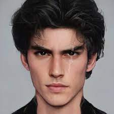

- home Grace Foster Jaxon Vega Hudson Vega
Jaxon Vega é um vampiro nato e filho da Rainha Delilah e do Rei Cyrus. Seu irmão mais velho é Hudson Vega, e a futura companheira de Jaxon é a personagem principal da série, Grace. Jaxon parece cruel e arrogante, mas, conforme a história avança, descobrimos que ele está se torturando por matar seu irmão, Hudson. Ele é o aluno mais temido da Academia Katmere e o herdeiro aparente da Corte dos Vampiros.
